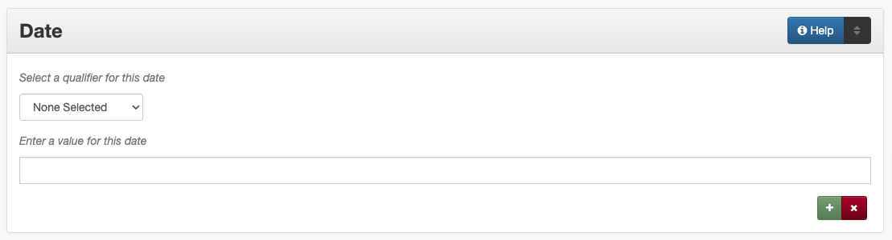

Date
Definition
Dates associated with events in the life cycle of the resource.
Where Can the Date Information be Found?
In some cases the date may come from accompanying or supplementary information.
Information Sources |
Creation date for this kind of item is the date or range of dates when: |
|---|---|
For text |
|
|
the text was published, printed, or revised |
For maps |
|
|
the map was printed |
For music scores |
|
|
the music was finished (handwritten) or printed |
For videos |
|
|
the video was recorded or publicly released |
For sound files |
|
|
the disc/tape was recorded or publicly released |
For computer files |
|
|
the content was finished |
How Date Works in the Metadata Form
- Parts:
Date qualifier – drop-down menu
Date – text field
- Repeatable?
Yes - to include different kinds of date information, click ‘Add’ to repeat all field parts; each individual date type (creation, submission, harvested, etc.) should not be repeated
- Required?
No - also see more information about required fields
How Should the Date be Filled in?
General Date Rules
If no date can be found, leave the field blank
For each date, be sure to choose the appropriate date type from the controlled vocabulary
The Special Dates section provides more information about choosing the most relevant format type
Always format dates appropriately:
Guideline |
Pattern |
Examples |
|---|---|---|
Basic Format: A single year, month, or day |
||
|
YYYY-MM-DD |
1985-03-27 |
|
YYYY
YYYY-MM
|
2006
1865-05
|
Unless specifically noted, other date types can be any level of specificity (year, month, day), but patterns and examples will not reflect all possible combinations
Guideline |
Pattern |
Examples |
|---|---|---|
Date Ranges: Inclusive period from a start through an end date |
||
|
YYYY-MM-DD/YYYY-MM-DD |
1941-12/1945-08 |
|
YYYY-MM-DD/..
../YYYY-MM-DD
|
1889-05-13/..
../1914-06
|
One of a Set: Specific unknown date during a known time period (e.g, sometime between 1900 and 1905) or among several options (e.g., July 1980 or 1981) |
||
|
[YYYY,YYYY,YYYY]
[YYYY-MM,YYYY-MM]
[YYYY..YYYY]
|
[1909,1919,1929]
[1980-07,1981-07]
[1939..1945]
|
Two periods in the set represents specific point within all of the years before/after two dates: |
||
|
[YYYY..YYYY] |
[1897..1901] |
|
[..YYYY] |
[..1897] |
|
[YYYY..] |
[1901..] |
Please note: since [square brackets] are used for this notation, they cannot be used to represent dates added from a source other than the item (see Comments for more information) |
||
Multiple Dates: Inclusive, separate dates that are not a single range (e.g., 4th of July 1850 and 1851) |
||
|
{YYYY,YYYY,YYYY}
{YYYY-MM,YYYY-MM}
{YYYY..YYYY,YYYY}
|
{1970,1980,1990}
{1850-07-04,1851-07-04}
{1939..1945, 2001}
|
Uncertain Dates: Partially-known or approximate dates |
||
|
YYYY-MM-DD? |
1958-09? |
|
YYYY-MM-DD~ |
1879-03-29~ |
|
YYYX
YYYY-MX-DD
|
189X
1924-1X-17
|
Seasons: For seasonal dates (such as quarterly publications) |
||
|
YYYY-SS |
1926-21
1991-23
|
Dates with Timestamps: Dates with time precision (requires a specific day) |
||
|
YYYY-MM-DDThh:mm:ss |
2008-05-02T15:07:51 |
B. C. Dates: Prehistoric dates (will be year only) |
||
|
-YYYY
-YYYYY
|
-0601
-50000
|
*For more information about implementation of the date standard, see the Comments below.
Complex Dates
If you have dates that are approximate, uncertain, or complicated in other ways, it can be difficult to choose the most appropriate formatting. This chart is framed for “creation” dates, but applies to any kind of date, to help explain which format is best to express a date. (For example, coverage dates would be reflect “If the item is about” rather than “If the item was created.”)
If the item was created: |
Such as: |
Use: |
Example: |
This means: |
|---|---|---|---|---|
During a known time of year |
A serial issue from fall 2004 (no listed publication month) |
Seasonal date |
2004-23 |
Autumn 2004 |
During a known decade |
A hat from the 1920s |
Unknown digit |
192X |
1920s |
At an approximate date |
A manuscript written circa 1846 |
Approximate date |
1846~ |
Approximately 1846 |
At a specific but uncertain date |
A photograph believed to have been taken in 1963 based on context |
Uncertain date |
1963? |
Possibly 1963? |
During an approximate uncertain date |
A map believed to have been drawn circa 1910 |
Uncertain/ approximate date |
1910% |
Approximately 1910? |
Over a period of time |
A scrapbook compiled 1980-1985 |
Date range (interval) |
1980/1985 |
1980 to 1985 |
During an approximate decade |
A photograph taken circa 1940s |
Date range (interval) |
1940~/1949~ |
Approximately 1940 to approximately 1949 |
During any approximate date range |
A letter written circa 1887- 1890 |
Date range (interval) |
1887~/1889~ |
Approximately 1887 to approximately 1889 |
At a particular time within a known range |
A map drawn sometime between 1900 and 1920 |
One of a set |
[1900..1920] |
Between 1900 and 1920 |
A photograph taken at an event held September 12-15, 1974 |
One of a set |
[1974-09-12..1974-09-15] |
Between September 12, 1974 and September 15, 1974 |
|
At a specific time during a number of dates |
A photograph in December, either 1954 or 1958 |
One of a set |
[1954-12,1958-12] |
December 1954 or December 1958 |
At multiple known dates or range(s) |
A page with two newspaper clippings from 1902 and November 12, 1920 |
Multiple dates |
{1902,1920-11-12} |
1902 and November 12, 1920 |
A scrapbook compiled during a student’s senior year 1927-1928 with notes from the start of the next fall |
Multiple dates |
{1927-08..1928-05,1928-09} |
August 1927 to May 1928 and September 1928 |
Determining Creation Dates
Whenever possible, enter an original resource creation date
Be sure to select “Creation” as the date type from the drop-down menu
If the creation date is unknown, leave the field blank
When the resource being described is a collection, a date range can be used to describe the creation date range of all the resources
Creation date refers to the date of the exact item described in the record, even if it is a derivation: |
|
If the item is a reprint or revision of an original text: |
|
If the item is a copy negative: |
|
A note about postcards and greeting cards: |
|
If there is no letter or message written on the card: |
|
If the card has a letter or message written on/in it: |
|
Non-Creation Dates
Use other types of dates only when they are relevant:
Date Harvested - Date that a web-resource was captured for archival purposes
Submission Date - Date that the item was submitted for approval by an organization, institution, or agency
Acceptance Date - Date that the item was approved by an organization, institution, or agency
Submission and acceptance dates are primarily used for patents, but may be used for other items when appropriate
For patents, the acceptance/approval date and creation date are the same. This may not be true for all items.
In certain cases, items cannot be made publicly available due to publisher requirements, privacy issues, or other strictures. The Embargo Until Date represents the first date that an item will become accessible to the public or a pre-specified user group. It is used in conjuction with an Embargo note. See also Rights Access
Other Examples
- [Letter from Zavala to Santa Anna, March 7, 1829]
Original Resource Creation Date: 1829-03-07
- Painting: A Scene from “The Beggar’s Opera”
Original Resource Creation Date: [1728..1729]
- Digital photograph: [Bull riding at the Cowtown Coliseum]
Original Resource Creation Date: 2003-12-27T09:16:40
- Court case: Documents pertaining to B. C. Wallace as the receiver of the estate and guardian of Campbell minors, cause no. 532, 1896-1904
Original Resource Creation Date: 1896-11-13/1904-12-08
- Farmer’s bulletin: Diseases of sheep and goats.
Original Resource Creation Date: 1943-09
- University catalog: Catalog of Hardin-Simmons University, 1989-1990 Undergraduate Bulletin
Original Resource Creation Date: 1989
- Photograph: Crazy Theatre With Car
Original Resource Creation Date: 1914~
- Postcard: [Hamilton Hotel, Laredo, Texas]
Original Resource Creation Date: 1910-01-23
- Archived website: U.S.-Canada Power System Outage Task Force
Original Resource Creation Date: 2004
Date Harvested: 2009-07-01
- Patent: Improvement in Medical Compounds or Bitters for Treating Chills and Fever.
Original Resource Creation Date: 1873-05-20
Submission Date: 1873-04-05
Acceptance Date: 1873-05-20
Resources
UNT Date Qualifier Controlled Vocabulary
Library of Congress Extended Date/Time Format
UNT Extended Date/Time Format Validation Service
Comments
To express the time period(s), date, or date range associated with the intellectual content of the resource, use the Coverage element.
For example, a book published in 1976 that is about Texas history from first statehood to 1964 would have an original resource creation date of 1976, but a coverage date range of 1846 - 1964.
Recommended best practice for encoding the date value is defined in the ISO-approved extension, available at from the Library of Congress: Extended Date/Time Format <http://www.loc.gov/standards/datetime/edtf.html>
As of November 2020, the UNTL edit system validates against the approved standard rather than the draft specifications
Currently all levels (0 through 2) are supported by UNT Libraries metadata guidelines
Local standards for uncertain dates differ slightly from level-1 EDTF extensions:
It is valid for the two right-most digits to be “unknown” (e.g., YYXX) however, it is preferred that the date represent at least a decade-level date in order to be helpful for users.
This rule also applies to month and day, but it is preferred to revert to the known date level with the assumption that additional granularity/specificity is unknown, e.g.:
Represent a year with an unknown month (YYYY-XX) as a year only: YYYY
Represent a year and month with an unknown day (YYYY-MM-XX) as a year and month only: YYYY-MM
Additionally, the extension allows for ranges to be “unknown” by leaving one side of the range blank vs. “open” using a “..” in place of one date. Generally, local standards prefer the “open” option to denote an explicit choice vs. accidental “/” punctuation.